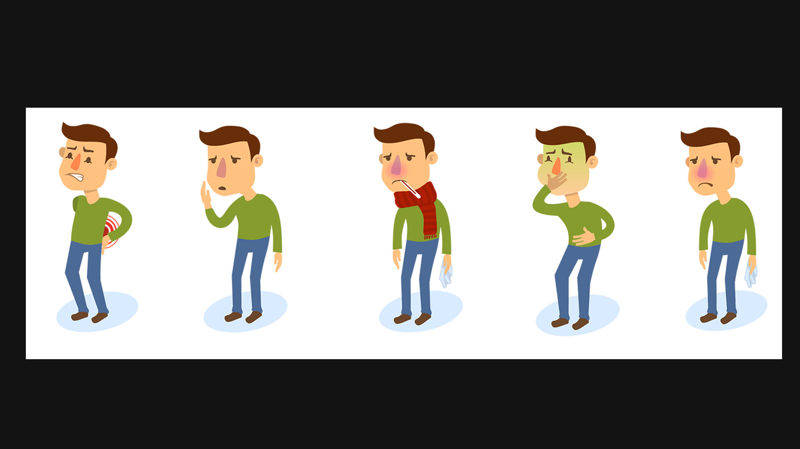
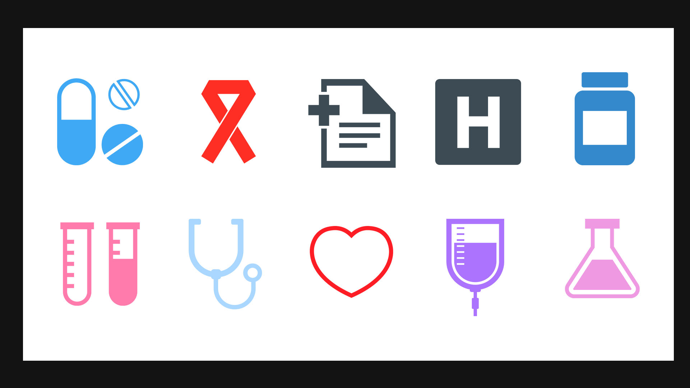

2018 / health product / UX / motion
A healthcare app direction that replaced sterile product patterns with character, iconography, motion, and a more human way to move through symptoms and decisions.

The design system used illustrated characters, custom controls, and color-coded flows to make clinical information feel more approachable. Instead of asking people to scan anonymous lists, the interface used visual feedback and motion to make the state of the body easier to understand.
The work became a foundation for later thinking around intelligent assistants, health data, and interfaces that guide people through uncertainty.

